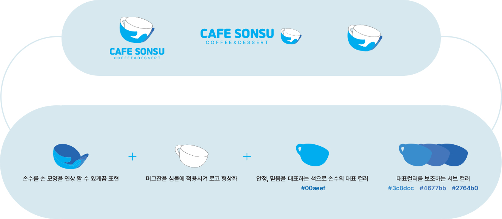

ABOUT US
BI
부산의 작은 섬 가덕도에 있는 완벽한 하루를 보내기 위한 최적의 장소를 소개합니다!
이곳에서는 파도와 파도 사이에 어떤 시간이 지나가는지 긴 창을 통해 볼 수 있고,
직접 빵을 굽는 맛있는 냄새와 커피를 만드는 몇몇 소리만 존재합니다.
소음 가득한 도심을 벗어나 힐링 공간을 찾고 있나요?
카페 손수에서 당신의 일상을 더욱 풍요롭고 즐겁게 업스케일링 하세요.
Symbol Concept

저희 카페 손수는 원두 로스팅, 음료, 디저트 제조부터 하나부터 열까지 정성스럽게 손수 준비하는 기업입니다.
로고 이미지는 저희의 정성스러운 마음을 담는 것을 형상화해 큰 머그잔을 베이스로 올리고 가덕도 앞바다의 상쾌함을 컵 안에 담아보았습니다.
손수에서 제공되는 모든 음료와 음식들은 심도 있게 엄선하였으며 저희가 직접 먹고 마신다고 생각으로
정성스럽게 만들 것을 약속드리기 위한 안정, 믿음을 대표하는 색으로 메인 색상인 #00aeef을 사용하였습니다.
서브 컬러인 #3c8dcc #4677bb #2764b0는 가덕도에 있는 파도가 연상되는 색상으로
하나의 색상으로 이루어진 것이 아니라 다양한 색상이 겹겹이 쌓여 지금 우리가 보는 아름다운 파도가 되었습니다.
이처럼 손수의 서브 컬러도 대표 색상을 더욱 돋보이게 하고 분위기를 해치지 않는 색상으로 선정하였습니다.